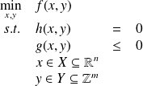

Optimisation
Remarque :
Un système énergétique complet (conversion, transport, stockage) est très complexe à maîtriser, et de fait, très difficile à optimiser.
Une fois ce constat effectuer, il n’empêche que les grands défis à relever pour 2050 passent forcément par cette optimisation.
Il est clair qu'en raison de l'ampleur des enjeux, les responsables ne pourront plus prendre de décisions hâtives ou justifier un choix d'attribution fondé sur un raisonnement instinctif ou des calculs naïfs. Afin de résoludre de ce type de problèmes, il est nécessaire de connaître les méthodes approuvées ainsi que de maîtriser les outils mathématiques et informatiques développés à cet effet.
Les méthodes proposées pour résoudre les problèmes évoqués ici sont nombreuses, mais peuvent toutes se résumer à l'énoncé mathématique suivant :
maximiser ou minimiser une fonction numérique de variables binaires ou continues, soumises à diverses contraintes linéaires ou non.
Définition :
On peut énoncer le même problème comme suit :

On parle d'optimisation MINLP (Mixed Integer Non Linear Programming)
Optimisation structurelle des réseaux de distribution de chaleur
Thèse de Théophile Mertz, thèse débutée en juin 2013 (contrat de partenariat avec la société NOBATEK, Talence, 33)
Les réseaux de distribution de chaleur permettent de transporter, à l'échelle d'une ville ou d'un quartier, la chaleur générée par une ou plusieurs sources principales vers les bâtiments où elle sera consommée, à travers un réseau dans lequel circule un fluide caloporteur. La conception du réseau est envisagée ici suivant une approche algorithmique mettant en œuvre des techniques d'optimisation numérique. La formulation du problème implique la définition :
des variables d'optimisation : topologie du réseau, nature des unités primaires et secondaires, paramètres de dimensionnement des unités de production/stockage et du réseau (capacités des stockages, longueurs des branches du réseau...), paramètres de fonctionnement des unités de production/stockage (consommation en énergie primaire...), variables d'état du système (températures et débits du fluide caloporteur aux différents points du réseau...)
de la fonction objectif à minimiser/maximiser : le coût total annualisé du réseau par exemple
de l'ensemble des contraintes à prendre en compte : contraintes de fonctionnement (charge des bâtiments...), équations de modèles (bilans d'énergie et de matière...). Il s'agit d'un problème d'optimisation non linéaire en variables mixtes (MINLP).
L'originalité de notre formulation, en plus d'optimiser simultanément la configuration et le dimensionnement du réseau, est de permettre de concevoir un réseau de chaleur dit de "4eme génération", c'est à dire :
un réseau de chaleur ayant plusieurs unités de production de chaleur de différents types (Biomasse, Solaire, géothermie, récupération de chaleur fatale, gaz...)
de prendre en compte des consommateurs ayant des besoins très variés (eau surchauffée pour industrie, eau chaude pour construction ancienne, eau "basse température" pour nouveau quartier)
de permettre des connexions entre consommateurs en parallèle (classique) ou en cascade, un consommateur "haute température" alimente un autre "basse température"
Cette formulation permet aussi de laisser le choix d'alimenter ou non certains consommateur (dans le cas, par exemple, où ils sont éloignés du reste du réseau)
Optimisation d'un réseau de distribution de chaleur couplé à un cycle ORC alimenté par géothermie profonde à haute enthalpie
Dans le cadre des Investissements d’Avenir (AMI Géothermie) de l’ADEME, le projet FONGEOSEC (Conception et développement d’un échangeur géothermique innovant haute enthalpie souterrain grande profondeur semi ouvert) réunit de nombreux partenaires : Fonroche Géothermie, Enertime, Flodim, Enesol Géothermie, Well Staff Développement, Foragelec, Armines, l’ENSEGID, le BRGM et le LaTEP. Ce projet a été accepté officiellement en septembre 2013.
Le projet FONGEOSEC vise à concevoir et réaliser un démonstrateur innovant d'une centrale géothermique haute enthalpie pour répondre aux grands enjeux énergétiques français, européens et mondiaux.
Dans ce cadre, le LaTEP s'est vu confier deux missions : Caractérisation thermodynamique et physico-chimique du fluide géothermique et Conception optimale et simulation dynamique de la deuxième étape de valorisation énergétique.
Je participe à la seconde tâche : optimisation du réseau de surface de distribution de chaleur (étape de valorisation énergétique), via la co-direction de la thèse de Fabien Marty :"Développement d'un outil d'aide à la conception optimale du réseau secondaire de distribution de chaleur d'une centrale géothermique"